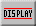

Now click on the Display Tool:  . This will display default settings of the simulation that you can alter.
The Show Conventional Current Animation button toggles between two states: either the direction of the conventional current is animated or it is not. Clicking the button once will change the state.
The Minimum Current to Animate entry field lets you set a minimum current. If the current in a circuit element is below this minimum, the simulation will not show this current.
The Maximum Current Before Short entry field lets you set a maximum current. If a current is above this value, the part of the circuit carrying the current will be considered to be a short circuit.
The Display Values When Adding Object button toggles between two states: the emf of a battery or the resistance of a resistor will either be displayed when the item is added to the circuit or it will not.
Try the Show All Values and Hide All Values buttons to see what their effects are.